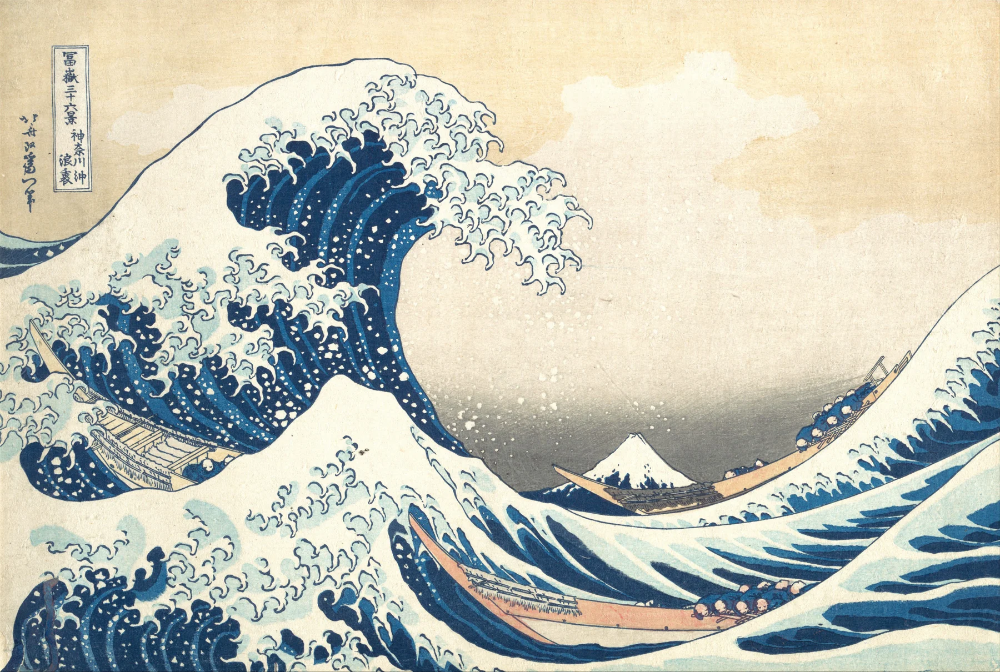

人物概要
江戸後期の浮世絵師。『冨嶽三十六景』『北斎漫画』などで知られる。長い画業を通じて画風や画号を変え、晩年まで制作を続けた。
残された言葉
辞世として伝わる句
人魂で ゆく気散じや 夏野原
死後も遊ぶ
読みをひらく
ひとだまで／ゆくきさんじや／なつのはら
『葛飾北斎伝』が伝える最期の願い（発言部分）
天我をして十年の命を長ふせしめば。 天我をして五年の命を保たしめば、真正の画工となるを得べし。
なお描きたい
読みをひらく
てんわれをしてじゅうねんのいのちをながうせしめば。 てんわれをしてごねんのいのちをたもたしめば、しんせいのがこうとなるをうべし。
要約
句は、死後は人魂となって夏の野原へ気晴らしに出よう、という軽やかな旅立ち。最期の言葉は、あと十年、せめて五年生きられれば本当の絵描きになれるのに、という制作への尽きない願い。
背景
1849年、数え90歳で没した。娘のお栄が門人に送った死亡通知も伝わる。十年・五年の言葉は、北斎没後44年の1893年に刊行された飯島虚心『葛飾北斎伝』が伝え、太田記念美術館が原文を紹介している。
蘊蓄 — ことばを味わう
「気散じ」は気晴らし。「死」を重い別離としてだけでなく、魂の散歩にしてしまう言い方が面白い。一方、画工になりたいという言葉を並べると、悠々とした句と制作への執念が同じ人物に共存して見える。
史料上の注意
墓碑の表記には「飛と魂で」「夏の原」などがある。最期の願いの二文は伝記に引用された発言部分で、現場の逐語記録とは区別する。十年の発言と五年の発言の間には、しばらくして言い直したという地の文がある。
出典
- 浮世絵研究資料『私本葛飾北斎ハンドブック』（PDF、760頁） ↗：墓碑の辞世。
- 太田記念美術館「90歳の北斎が、死の間際に望んだこと。」 ↗：『葛飾北斎伝』原文、死亡通知と成立事情。
- 江戸東京博物館「北斎 ヨーロッパを魅了した江戸の絵師」 ↗：人物・画業。
関連する美術・書の資料

The Metropolitan Museum of Art, H. O. Havemeyer Collection, Bequest of Mrs. H. O. Havemeyer, 1929 ↗
Public Domain / CC0